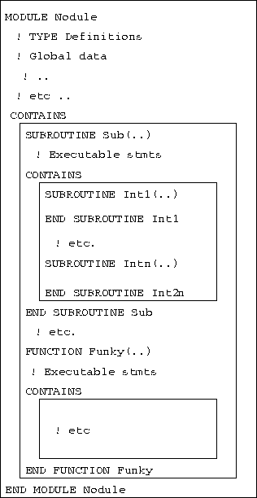

Next: Modules - Global Data
Up: Modules
Previous: Modules
The syntax of a module program unit is:
MODULE  module name
module name 
declarations and specifications statements
[ CONTAINS
definitions of module procedures ]
END [ MODULE [ module name ] ]
module name is the name that appears in the USE statement,
it is not necessarily the same as the filename.

Figure 9: Schematic Diagram of a Module Program Unit
Entities of other modules can be accessed by a USE
statement as the first statement in the
specification part. This is called use-association.
Non-circular dependent definition chains are allowed
(one module USE s another which USE s
another and so on) providing a partial-inheritance mechanism.
A module may include the following declarations and specifications:
- USE statements (a module
inherit the environment of another module either
fully or partially by using USE .. ONLY clause,)
- object definitions, (any declarations and definitions
that could appear in a main program can also be found here),
- object initialisations,
- type definitions,
- accessibility statements (see Section
 ),
), - interface declarations (of external procedures);
- MODULE PROCEDURE declarations (procedures that appear
after the CONTAINS specifier).
Module procedures are written in exactly the same way as regular
(external) procedures and may also contain internal procedures. They can
be given visibility attributes so may be private to the module or usable
by any program unit that employs the module.
Next: Modules - Global Data
Up: Modules
Previous: Modules
Adam Marshall ©University of Liverpool, 1996
Tue Nov 26 17:50:42 GMT 1996